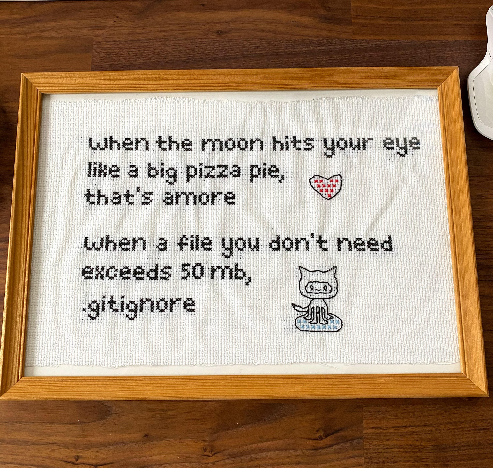

Ignoring Things
Questions
- How can I tell Git to ignore files I don’t want to track?
Objectives
- Configure Git to ignore specific files.
- Explain why ignoring files can be useful.

What if we have files that we do not want Git to track for us, like backup files created by our editor or intermediate files created during data analysis? Let’s create a few dummy files:
mkdir results
touch a.dat b.dat c.dat results/a.out results/b.outand see what Git says:
git statusOn branch main
Untracked files:
(use "git add <file>..." to include in what will be committed)
a.dat
b.dat
c.dat
results/
nothing added to commit but untracked files present (use "git add" to track)Putting these files under version control would be a waste of disk space. What’s worse, having them all listed could distract us from changes that actually matter, so let’s tell Git to ignore them.
We do this by creating a file in the root directory of our project called .gitignore:
nano .gitignore
cat .gitignore*.dat
results/These patterns tell Git to ignore any file whose name ends in .dat and everything in the results directory.
Once we have created this file, the output of git status is much cleaner:
git statusOn branch main
Untracked files:
(use "git add <file>..." to include in what will be committed)
.gitignore
nothing added to commit but untracked files present (use "git add" to track)The only thing Git notices now is the newly-created .gitignore file. You might think we wouldn’t want to track it, but everyone we’re sharing our repository with will probably want to ignore the same things that we’re ignoring. Let’s add and commit .gitignore:
git add .gitignore
git commit -m "Ignore data files and the results folder."
git statusOn branch main
nothing to commit, working directory clean.gitignore templates and your data folder
If any of the
.datfiles were already being tracked, Git would continue to track them! So if at all possible, add your data folder to.gitignoreearly in the life of your project.If you’re working with a new programming language, you can often be unsure of what should be ignored. Luckily, GitHub provides a curated repository, in which it has template
.gitignorefiles for nearly all programming languages you’re likely to encounter.
As a bonus, using .gitignore helps us avoid accidentally adding files to the repository that we don’t want to track:
git add a.datThe following paths are ignored by one of your .gitignore files:
a.dat
Use -f if you really want to add them.If we really want to override our ignore settings, we can use git add -f to force Git to add something. For example, git add -f a.dat. We can also always see the status of ignored files if we want:
git status --ignoredOn branch main
Ignored files:
(use "git add -f <file>..." to include in what will be committed)
a.dat
b.dat
c.dat
results/
nothing to commit, working directory cleanChallenge: Ignoring Nested Files
Given a directory structure that looks like:
results/data
results/plotsHow would you ignore only results/plots and not results/data?
Solution
If you only want to ignore the contents of results/plots, you can change your .gitignore to ignore only the /plots/ subfolder by adding the following line to your .gitignore:
results/plots/This line will ensure only the contents of results/plots is ignored, and not the contents of results/data.
As with most programming issues, there are a few alternative ways that one may ensure this ignore rule is followed. The “Ignoring Nested Files: Variation” exercise has a slightly different directory structure that presents an alternative solution. Further, the discussion page has more detail on ignore rules.
Including Specific Files
How would you ignore all .dat files in your root directory except for final.dat? Hint: Find out what ! (the exclamation point operator) does
Solution
You would add the following two lines to your .gitignore:
*.dat # ignore all data files
!final.dat # except final.dataThe exclamation point operator will include a previously excluded entry.
Note also that because you’ve previously committed.dat files in this lesson they will not be ignored with this new rule. Only future additions of .dat files added to the root directory will be ignored.
Challenge: Ignoring Nested Files: Variation
Given a directory structure that looks similar to the earlier Nested Files exercise, but with a slightly different directory structure:
results/data
results/images
results/plots
results/analysisHow would you ignore all of the contents in the results folder, but not results/data? Hint: think a bit about how you created an exception with the ! operator before.
Solution
If you want to ignore the contents of results/ but not those of results/data/, you can change your .gitignore to ignore the contents of results folder, but create an exception for the contents of the results/data subfolder. Your .gitignore would look like this:
results/* # ignore everything in results folder
!results/data/ # do not ignore results/data/ contentsChallenge: Ignoring all data Files in a Directory
Assuming you have an empty .gitignore file, and given a directory structure that looks like:
results/data/position/gps/a.dat
results/data/position/gps/b.dat
results/data/position/gps/c.dat
results/data/position/gps/info.txt
results/plotsWhat’s the shortest .gitignore rule you could write to ignore all .dat files in result/data/position/gps? Do not ignore the info.txt.
Solution
Appending results/data/position/gps/*.dat will match every file in results/data/position/gps that ends with .dat. The file results/data/position/gps/info.txt will not be ignored.
Challenge: Ignoring all data Files in the repository
Let us assume you have many .dat files in different subdirectories of your repository. For example, you might have:
results/a.dat
data/experiment_1/b.dat
data/experiment_2/c.dat
data/experiment_2/variation_1/d.datHow do you ignore all the .dat files, without explicitly listing the names of the corresponding folders?
Solution
In the .gitignore file, write:
**/*.dat This will ignore all the .dat files, regardless of their position in the directory tree. You can still include some specific exception with the exclamation point operator.
Challenge: The Order of Rules
Given a .gitignore file with the following contents:
*.dat
!*.datWhat will be the result?
Solution
The! modifier will negate an entry from a previously defined ignore pattern. Because the !*.dat entry negates all of the previous .dat files in the .gitignore, none of them will be ignored, and all .dat files will be tracked.
Challenge: Log Files
You wrote a script that creates many intermediate log-files of the form log_01, log_02, log_03, etc. You want to keep them but you do not want to track them through git.
Write one
.gitignoreentry that excludes files of the formlog_01,log_02, etc.Test your “ignore pattern” by creating some dummy files of the form
log_01, etc.You find that the file
log_01is very important after all, add it to the tracked files without changing the.gitignoreagain.Discuss with your neighbor what other types of files could reside in your directory that you do not want to track and thus would exclude via
.gitignore.
Solution
- append either
log_*orlog*as a new entry in your .gitignore - track
log_01usinggit add -f log_01
Key points
- The
.gitignorefile tells Git what files to ignore.
All materials copyright Sydney Informatics Hub, University of Sydney